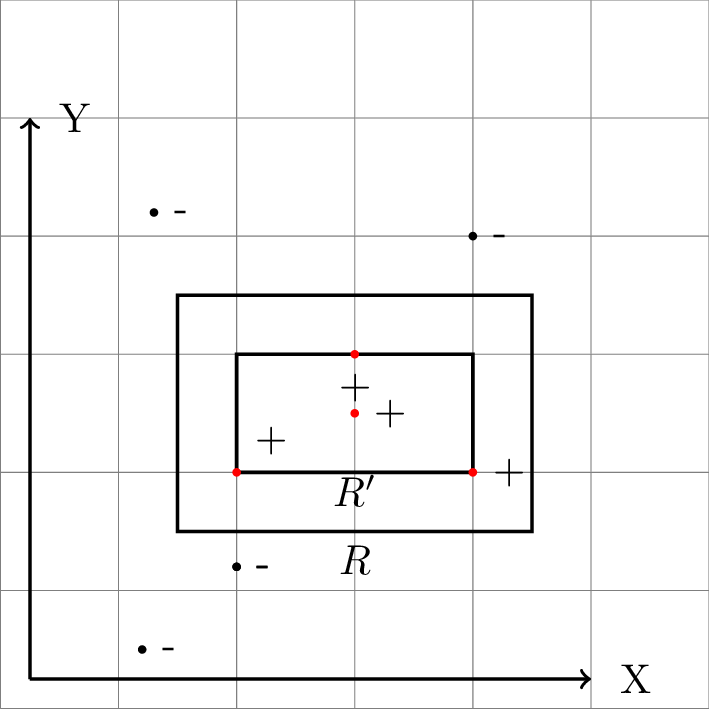
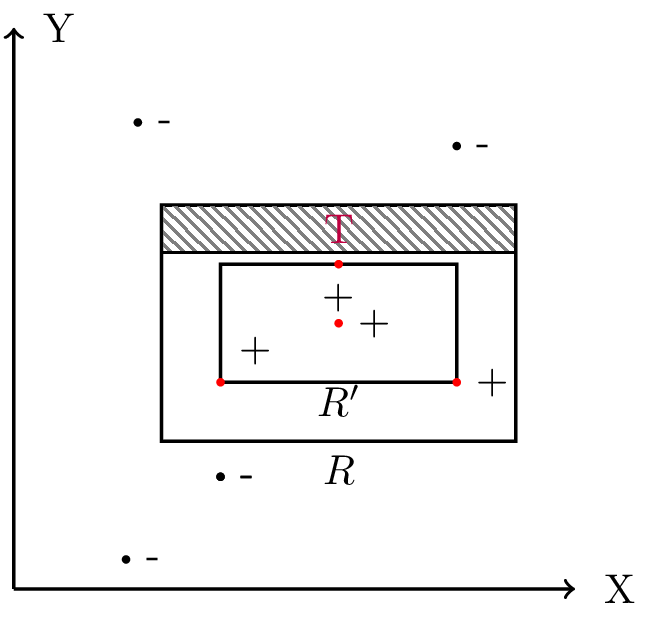

Problem Intro
I am going through this book [1] on Computational Learning Theory.
This is at the first block of technical info located in the first chapter titled: Probably Approximately Correct (PAC) Learning , their steps to a first stab at a definition for PAC learning
The game of learning being played here is learning an axis aligned (sides are parallel to the coordinate axis) rectangle R in a 2-D plane (Euclidean \( \mathbb{R}^2 \))
Paraphrasing from page 1 of the book
The player recieves information about R only through the following process: a random point p is chosen in the plane according to the fixed probability distribution D . The player is given the coordinates of p and is then told whether or not p lies inside R
The player's goal is to output a hypothesis rectangle \(R'\) that is as close as possible to R using as few examples as possible and the least amount of computation possible
Further more: The error of the hypothesis rectangle \( R' \) is defined as the probability that a random point p chosen according to D will lie inside \( (R - R') \cup (R - R') \)
The following is verbatim from page 3 of the book:
There is a simple and efficient strategy for the player of the rectangle learning game. The strategy is to request a "sufficiently large" number m of random examples, then choose \( R'\) which gives the tightest fit to the positive examples (that is, that rectangle with the samllest area that includes all of the positive examples and none of the negative examples)
The main bit:
(Quoted almost verbatim from page 3 of the book)
We will now show that for any target rectangle R and any distribution D, and for any small values \( \epsilon \) and \( \delta (0 \lt \epsilon, \delta \le \frac{1}{2}) \), for a suitable chosen value of m we can assert with probability at least \( 1 - \delta \), the tightest-fit rectangle has error at most \( \epsilon \) with respect to R and D
Strategy
Quoted pretty much verbatim from pages 3-4 of the book
First observe that the tightest-fit rectangle \(R'\) is always contained in the target rectangle R. We can express the difference \( R - R' \) as four rectangular strips. ...[Omitted] Now if we can guarentee that the weight under D of each strip (that is, the probability with respect to D of falling in the strip) is at most \(\frac{\epsilon}{4}\), then we can conside that the error of \(R'\) is at most \(4(\frac{\epsilon}{4})=\epsilon \) (Here we have erred on the side of pessimism by counting each overalp region twice)
Their solution

They start off with taking a sliver of the distribution D that amounts to \(\frac{\epsilon}{4}\) that is located at the top strip (of the 4) of the difference \( R - R' \) that extends from the top of \( R \) towards the top of \( R' \) ( It is not necessarily the case that it reaches close or even engulfs the top of \( R' \) )
The probability of a randomly drawn point p missing this region (which is at most \(\frac{\epsilon}{4}\)) is (1 - \(\frac{\epsilon}{4}\))
Now remember we have m independent samples to form our hypothesis rectangle \( R' \) so the probability that all the samples miss this region is \((1 - \frac{\epsilon}{4})^m\)
Now here is where I layout my problem with the solution and this is verbatim from the book right after the above bits of the solution was defined
... Therefore the probability that m independent draws from D all miss the region T is exactly \((1 - \frac{\epsilon}{4})^m\). Here we are using the fact that the probability of a conjection of independent events is simply the product of the probabilities of individual events. The same analysis holds for the other three rectangular regions of \(R - R'\), so by union bound the probability that any of the four strips of \(R - R'\) has a weight greater than \(\frac{\epsilon}{4}\) is at most 4 \((1 - \frac{\epsilon}{4})^m\) . By union bound, we mean the fact that if A and B are two events (that is, subsets of a probability space), then\(\mathbf{Pr}[A \cup B] \le \mathbf{Pr}[A] + \mathbf{Pr}[B] \)
How do you go from something so simple as the probability of missing a fixed region to probability of an error strip ?
Furthermore to add to the confusion, the authors spell out trivial probability laws and then in the same breathe make a jump of reasoning in one shot
Questions that need to be answered
- How do you go from something so clear as the probability of missing a fixed region (T) to probability of an error strip having a weight
- More importantly and quite frankly the reason for this whole post How do you make a statement about the probability of the \(R - R'\) regions being greater than \( \frac{\epsilon}{4} \) without explicitly stating the probability of regions having weight \( = \frac{\epsilon}{n} \) where \( n \in (0,4) \)
My take on filling in the details
Let's say the error strip did have an error that was \( \gt \frac{\epsilon}{4} \), let's call this weight \( \epsilon_{\text{strip}} \)
\( \epsilon_{\text{strip}} \gt \frac{\epsilon}{4} \therefore 1 - \epsilon_{\text{strip}} \lt 1 - \frac{\epsilon}{4} \) \(\therefore (1 - \epsilon_{\text{strip}})^m \lt (1 - \frac{\epsilon}{4})^m \)
As long as the error strip has a weight \( \ge \frac{\epsilon}{4} \) the probability of all the samples missing this strip is upperbound by \((1 - \frac{\epsilon}{4})^m\) i.e the probability of the error strip having a weight \( \ge \frac{\epsilon}{4} \) is less than the probability of all the samples missing the fixed strip
This upperbound is important for the addressing the next concern
-
Let's us look at carefully at just the one strip i.e \( \mathbf{Pr}[\textrm{error strip has weight} \gt \frac{\epsilon}{4}] = (1-\frac{\epsilon}{4})^m \)
Again how is \( \mathbf{Pr}[\textrm{error strip has weight} \gt \frac{\epsilon}{4}] \) not explicitly expanded to \( \mathbf{Pr}[\land_{n} (\textrm{error strip has weight} = \frac{\epsilon}{n}) \textrm{where n} \in (0,4) \subset \mathbb{R}] \) ??
The one thing to note is that these are Nested Events and the cardinality of the set of nested events is \( \infty \)
We can use the theorem described here [2] which goes : \( A_1 \subset A_2 \subset A_3 \subset \ldots , P(A_1 \cup A_2 \cup A_3 \cup \ldots) = \lim_{n \to \infty} P(A_n) \)
Given we have the upperbound , the limit of the probability of the nested events is the upperbound
Therefore the probability of the error strip having a weight \( \gt \frac{\epsilon}{4} \) is at most \( (1 - \frac{\epsilon}{4})^m \)